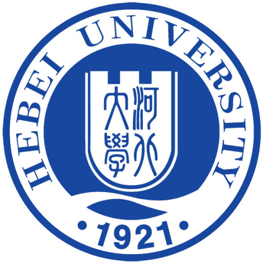

News
- Submission page is opened. (Apr. 7, 2022)
- Call for Posters is announced (Apr. 9, 2022)
Overview
The 17th Asia Joint Conference on Information Security (AsiaJCIS 2022) will be held in Baoding, China on August 15-16,2022.
| Venue | Hebei University
[map]
Heibei, Baoding, China |
|
|---|---|---|
| Date | August 15-16,2022 | |
| Important dates |
|
|
| Hosted by | AsiaJCIS organizing committee and Hebei University |
 |